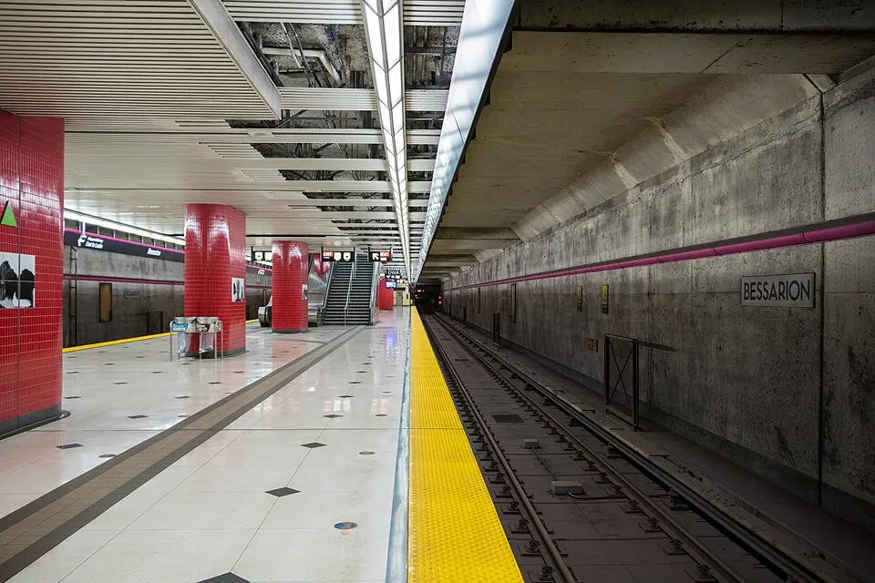

Signal
SignalStation atlas / Bessarion
Station history
Bessarion


Station history
A photographic frieze used images of local people’s hands, heads and feet in the new station.
The TTC formally opened the Sheppard subway and invited visitors to try the trains during an open house.
Scheduled trains began serving the neighbourhood around Bessarion Road and Burbank Drive.